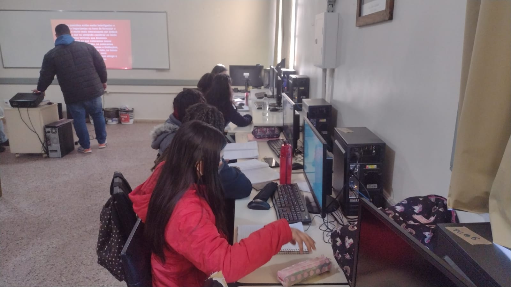

Sobre o curso
O Curso busca formar profissionais que atendam os processos administrativos de uma organização conforme suas políticas, princípios, valores e estratégias, de forma a alcançar seus objetivos e suas metas.Jovens que saibam atuar na execução de serviços de apoio nas áreas de recursos humanos, administração, marketing, finanças e logística; atender fornecedores e clientes, fornecendo e recebendo informações sobre produtos e serviços; cuidar de documentos variados, cumprindo todo o procedimento necessário. Os jovens vão aprender a utilizar os softwares Word, Excel, Power Point, internet e redes sociais.

Turma turno da tarde - Rede Calábria.

Objetivo do curso
Conhecimento na execução de serviços de apoio nas áreas de recursos humanos, administração, finanças e logística; atender fornecedores e clientes, fornecendo e recebendo informações sobre produtos e serviços; tratar de documentos variados, cumprindo todo o procedimento necessário.
Conteúdo estudado
- Fluxograma- Fluxograma é uma representação gráfica do fluxo (movimento) de um processo. Permite uma visão completa, sequencial, clara e precisa de um fluxo, facilitando sua análise.
- Sistema de gestão de qualidade (SGQ)- Conjunto de pessoas, práticas, procedimentos, equipamentos, instalações, sistemas, recursos voltados e direcionados para a obtenção da qualidade em uma organização. Buscando sempre a satisfação do cliente.
- Metodologias ágeis- As Metodologias Ágeis são uma forma de acelerar entregas de um determinado projeto. Ela consiste no fracionamento de entregas para o cliente final em ciclos menores.
- Arquivologia- arquivologia é a ciência que estuda as funções do arquivo, e também os princípios e técnicas a serem observadas durante a atuação de um arquivista sobre os arquivos
- Ferramentas de trabalho: Google Workspace, Pacote Office...
- E diversos outros conteúdos importantes da área
Outros conteúdos
Sistema 5S, Marketing, Gestão de projetos, Administração financeira, Contabilidade, Competências administrativas, Comunicação e atendimento, Empresas, Departamento pessoal e recursos humanos, Emprendedorismo...
Turma turno da tarde - Rede Calábria.
Inserção no mercado de trabalho
G1: Pesquisa lista os 10 cargos mais procurados pelos candidatos brasileiros: Assistente administrativo lidera ranking.
Assistente administrativo, vendedor e analista contábil estão entre os 10 cargos mais procurados pelos candidatos no mercado de trabalho do Brasil, segundo pesquisa da Vagas.com. De acordo com o levantamento, a maioria dos cargos é para a área de administração e de nível médio.
Saiba mais sobre o mercado de trabalho